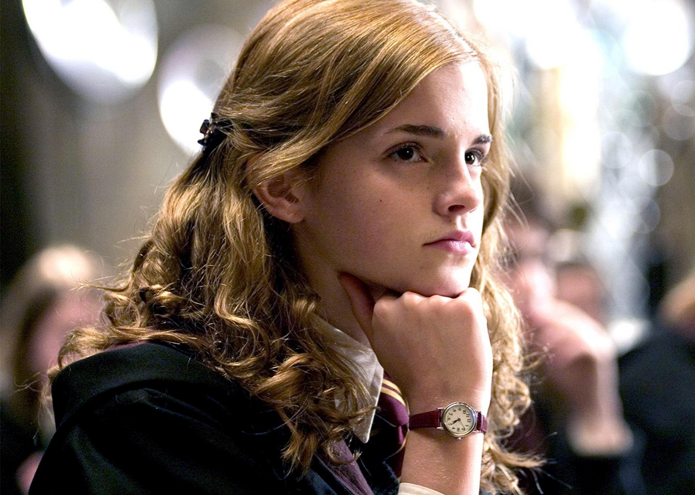
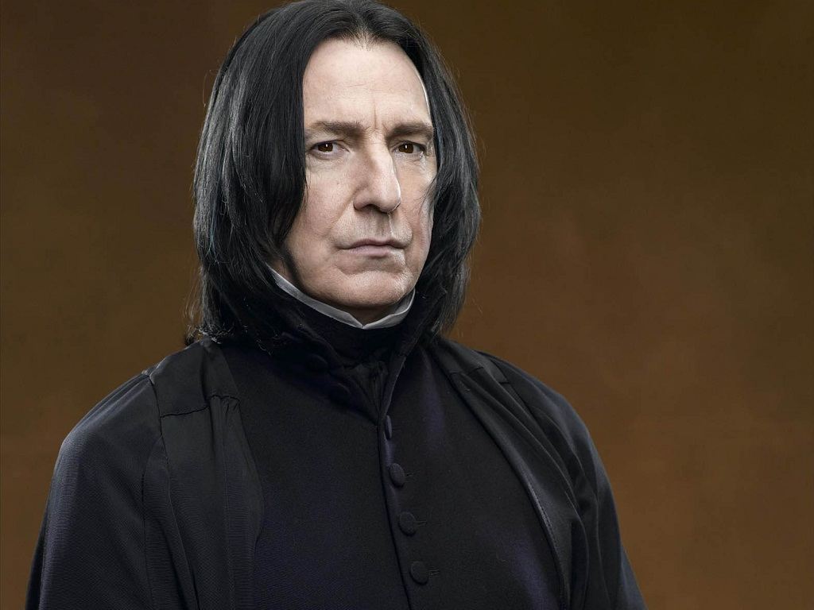

| POZA |
NUME |
DATA NASTERII |
PRIMA APARATIE |
ULTIMA APARITIE |
ROL |
CLASA |
SCURTA DESCRIERE |
|
Harry James Potter |
31-Iulie-1980 |
Harry Potter si Piatra Filozofala |
Harry potter si talismanele mortii |
Personaj principal |
Gryffindor |
Cărțile prezintă șapte ani din viața orfanului singuratic, care la vârsta de 11 ani descoperă că este vrăjitor și are părinți magicieni. El urmează cursurile de magie la Hogwarts - Școala de Farmece și Vrăjitorie. Sub îndrumarea directorului Albus Dumbledore, Harry află că este deja faimos în lumea vrăjitoriei și că soarta lui este legată de Lordul Cap-de-Mort (Voldemort), vrăjitorul întunecat care i-a ucis părinții și care se presupunea că a murit când a încercat să-l omoare și pe Harry. |
|
Ronald Bilius "Ron" Weasley |
1-martie-1980 |
Harry Potter si Piatra Filozofala |
Harry potter si talismanele mortii |
Prietenul cel mai bun a lui Harry |
Gryffindor |
Ron Weasley este unul dintre personajele principale, împreună cu Harry Potter și Hermione Granger. Ron provine dintr-o familie cu sânge pur de vrăjitori nu prea înstăriți, trădători de sânge.Dușmanii lui Ron și al restul familiei Weasley este familia Malfoy (Reacredință). Aceștia sunt tot sânge-puri, dar cu principii diferite și mult mai aroganți. |
|  |
Hermione Jean Granger |
19-septembrie-1979 |
Harry Potter si Piatra Filozofala |
Harry potter si talismanele mortii |
Prietena lui Harry si Ron |
Gryffindor |
Hermione Jean Granger este singurul copil al doamnei și domnului Granger. Fiind născută și crescută într-o familie de "încuiați", ea interacționează pentru prima dată cu magia la vârsta de unsprezece ani, când primește o scrisoare în care se specifică că este admisă în cadrul Școlii de Farmece și Vrăjitorii Hogwarts. Ea începe să studieze în cadrul acestei școli pe data de 1 septembrie a anului 1991, aproape la doisprezece ani, și este sortată de către jobenul vorbitor în casa Cercetașilor. |
|
Rubeus Hagrid |
30-martie-1950 |
Harry Potter si Piatra Filozofala |
Harry potter si Talismanele Mortii |
Păstrătorul cheilor și paznicul vânatului de la Hogwarts |
----- |
Rubeus Hagrid este un personaj din seria de cărți Harry Potter. Este păstrătorul cheilor și paznicul vânatului de la Hogwarts. Pe vremea când era elev a fost acuzat de deschiderea Camerei Secretelor și exmatriculat in anul trei de studiu. Albus Dumbledore, pe vremea aceea doar profesor (de Transfigurare) la școală, l-a convins pe directorul școlii să-l lase pe Hagrid să rămână Păstrător al Cheilor și Paznic al Vânatului (din Pădurea Interzisă). Devine profesor pentru Grija fata de creaturile magice. S-a născut din mamă urias si tată incuiat, care a murit înainte ca Hagrid sa fie exmatriculat. Are un frate urias. In timpul anilor de studiu a crescut un păianjen urias pe nune Aragog care traieste in Padurea Interzisa. Hagrid joaca un rol destul de important in viata lui Harry Potter, acesta fiind indragit de el. De asemenea si prietenii lui Harry Potter il plac pentru dragostea lui pentru animale. |
|
Sirius Black |
3-noiembrie-1959 |
Harry Potter si Prizonierul din Azkaban |
Harry Potter si Talismanele mortii |
Nasul de botez a lui Harry |
Gryffindor |
Sirius Black, poreclit Amprentă este ultimul moștenitor al Casei Black cândva notabilă casă de sânge pur din familiile vrăjitorilor. Locuința familiei Black este la numărul doisprezece, Grimmauld, Londra. Conține multe artefacte de origine dubioasă. Motto-ul familiei Black este Toujours Pur, în franceză "Întotdeauna / Stil Pur", pentru că familia Black a fost una dintre puținele familii rămase liniile de sânge complet pur. Cum este descris în arborele lor genealogic, familia Black este amestecată cu alte câteva familii de sânge-pur, iar toate vrăjitoarele și toți vrăjitorii din familie sun obligați de sa-și mențina sângele-pur. |
|  |
Severus Snape |
9-ianuarie-1960 |
Harry Potter si Piatra Filozofala |
Harry potter si Talismanele Mortii |
Profesor de Potiuni si Aparare impotriva magiei negre |
Slytherin |
Pe parcursul întregii serii, autoarea lasă să se întrevadă faptul că Severus lucrează atât pentru Voldemort (Cap-de-Mort), cât și pentru Dumbledore, adevărata sa loialitate fiind elucidată abia în ultimul volum.Motivul pentru care Plesneală a încetat să fie un Devorator al Morții este chiar mama lui Harry, Lilly Potter. Cei doi se cunoșteau de când erau mici, pentru că locuiau în apropiere unul de celălalt. Snape a fost primul care i-a zis lui Lilly că este o vrăjitoare, iar de atunci cei doi s-au împrietenit. Snape s-a îndrăgostit de ea, dar ea l-a respins deoarece nu-i plăceau prietenii săi, "viitorii Devoratori". După terminarea școlii, cei doi nu s-au mai văzut. El a devenit un Devorator, iar ea s-a căsătorit cu James Potter, tatăl lui Harry. Plesneală a continuat însă să o iubească pe Lilly pe durata întregii sale vieți, drept dovadă stând și forma Patronusului acestuia, el fiind același ca al lui Lilly, și anume: o căprioară. |
|
Professor Albus Percival Wulfric Brian Dumbledore |
26-august-1840 |
Harry Potter si Piatra Filozofala |
Harry potter si Talismanele Mortii |
Directorul școlii Hogwarts și mentor al lui Harry |
Gryffindor |
Se crede despre Dumbledore că a fost un Cercetaș la vremea sa, și este posibil ca de aceea el să aibă o afinitate către Cercetași. Dumbledore s-a reîntors la Hogwarts după 75 de ani de la absolvire, pentru postul de profesor de Transfigurare, iar mai târziu a devenit Director Adjunct, în care calitate a început să atragă potențiali elevi.Una dintre sarcinile lui Dumbledore a fost să-l găsească pe Tom Marvolo Riddle/Tomas Dorlent Cruplud, pe când acesta încă nu era Lordul Voldemort/Cap-de-Mort, și să-i ofere un loc la Hogwarts. Tom Riddle trăia într-un orfelinat de Încuiați, unde descoperise că are puteri neobișnuite, neștiind însă că mama sa fusese vrăjitoare.Patronusul lui Dumbledore are forma unei păsări Phoenix. Arma lui preferată pare să fie focul: în luptă cu Voldemort a folosit o frânghie de foc, în peșteră a folosit focul împotriva Inferilor, iar când i-a demonstrat lui Tom Riddle/Cruplud puterile magice a făcut-o dând foc dulapului din cameră. |
 |
Minerva McGonagall |
4-octombrie-1925 |
Harry Potter si Piatra Filozofala |
Harry potter si Talismanele Mortii |
Profesor titular al disciplinei de Transfigurare |
Gryffindor |
Deși nu o arată, ea îl compătimește pe Harry pentru pierderea părinților lui și îi poartă multă afecțiune. În cartea întâi ,nu îi poate crede pe Lily și James Potter morți și îi cere lui Dumbledor părerea. Deasemenea, în ultima carte, când Harry se sacrifică pentru a nu mai muri alți prieteni deai lui, profesoarei îi e foarte greu să accepte că acesta e mort. Îi ia apărarea de fiecare dată cand poate dar nici nu ezită când vrea să îl pedepsească. |
|
Draco Lucius Malfoy |
5-iunie-1980 |
Harry Potter si Piatra Filozofala |
Harry potter si Talismanele Mortii |
Dusmanul de moarte a lui Harry |
Slytherin |
Draco este un băiat înalt, blond, cu ochi albastrii si sânge pur . Draco Malfoy este dușmanul de moarte al lui Harry Potter. Face parte din Casa Viperinilor, iar tatăl lui, care lucrează la Ministerul Magiei, a fost unul dintre adepții Lordului Voldemort. Cu orice nu îi place la Hogwarts, Draco ia legătura cu tatăl său, Lucius Malfoy și acesta îi spune ministrului. Este un lăudăros care ar face orice numai ca Dumbledore și Harry Potter să fie îndepărtați. Nu este silitor la ore, însă, la orele de poțiuni este favorizat de profesorul lui preferat, Severus Plesneală. De multe ori, prin lauda lui, a suportat multe pedepse și s-a dovedit că numai gura e de el. Este însoțit tot timpul de gorilele lui, Crabbe și Goyle. Oricine încearcă să-l atingă, se alege cu rupturi de oase. |
 |
Lord Voldemort born Tom Marvolo Riddle |
31-decembrie-1926 |
Harry Potter si Piatra Filozofala |
Harry potter si Talismanele Mortii |
Vrajitorul intunecat |
Slytherin |
Considerat cel mai mare Vrăjitor Întunecat al tuturor timpurilor, Voldemort este atât de puternic încât majoritatea vrăjitorilor și vrăjitoarelor se tem chiar să îi pronunțe numele, folosind eufemisme de genul Cel-Al-Cărui-Nume-Nu-Trebuie-Pronunțat sau Știi-Tu-Cine / Știm-Noi-Cine. De asemenea este cunoscut faptul că este reptomit (adică vorbește limba șerpilor) și este expert în Legilimanție (citirea gândurilor) și în Occlumanție (ascunderea gândurilor).În tinerețe era un băiat înalt, drăguț, cu părul vâlvoi, dar după ce a ajuns la maturitate Voldemort și-a pierdut corpul când a eșuat să-l omoare pe Harry Potter. Vraja (Avada Kedavra) a ricoșat înapoi înspre el. 13 ani mai târziu și-a recâștigat trupul printr-un ritual complex ce presupunea multă Magie Neagră. Acest nou trup nu era însă cel original. În loc de corpul frumos și chipeș pe care îl avea când era Tom Riddle, Lordul Voldemort este acum înalt, subțire, cu înfățișare de șarpe, pielea extrem de albă, pupile înguste ca de pisică, iar în loc de nări are două tăieturi, dând impresia unui șarpe. |
|
Remus John Lupin |
10-martie-1960 |
Harry Potter si Prizonierul din Azkaban |
Harry Potter si Talismanele mortii |
Prieten a lui James si Lily Potter, profesor si Om-lup |
Gryffindor |
A fost prieten cu Lily, James Potter si Sirius Black și a fost membru, alături de ei, al Ordinului Phoenix. Profesorul Lupin este important pentru Harry in anul III, prin faptul că îl învață cum să invoce un Patronus( un scut pentru apărarea contra Dementorilor). Fiind om-lup, nu puțini au fost cei care nu au fost de acord cu înscrierea sa la Hogwarts, Școala de Magie, Farmece și Vrajitorii. Cu toate astea, a fost apărat de directorul Albus Dumbledore și ,pentru siguranța elevilor, s-a construit un tunel subteran de acces din școală până la o casă părăsită din satul Hogsmeade din apropierea școlii, pe care îl folosea în perioada când era lună plină și se transforma în lup.Pentru ca nimeni să nu descopere tunelul a fost săpat langa Salcia Batausa. În seara în care Harry și prietenii lui îl descoperă în sfârșit pe adevăratul responsabil pentru moartea părinților lui Harry, Peter Pettigrew, Lupin, văzând luna, se transformă în om-lup iar Peter le scapă. |